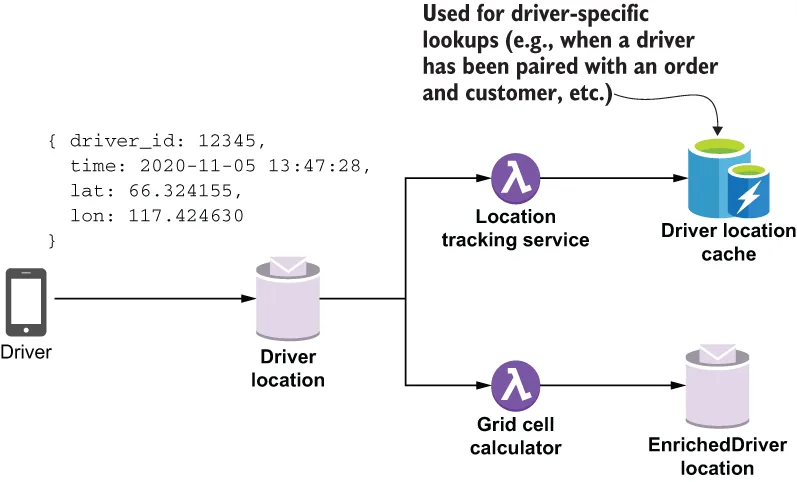
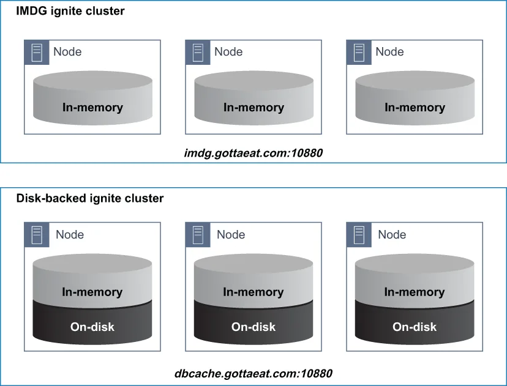
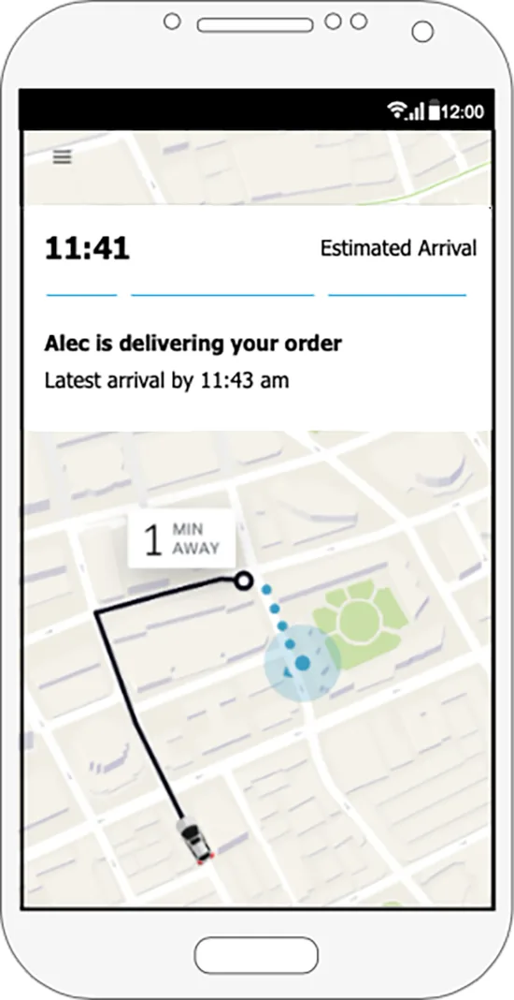
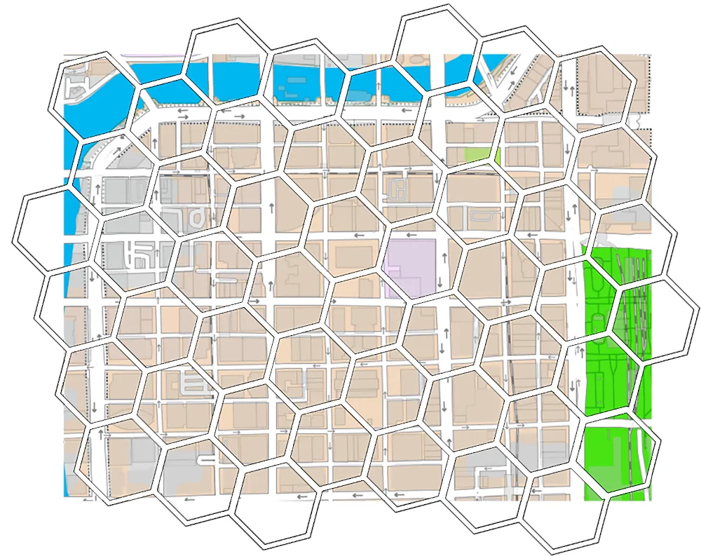
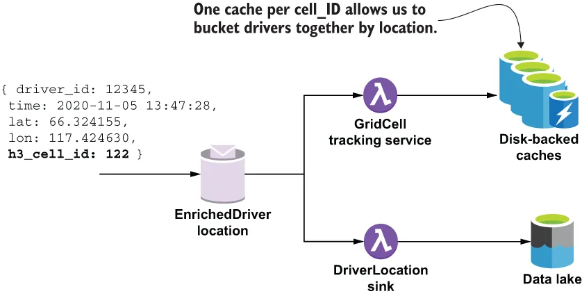

Every 30 seconds, a location message is sent from the driver’s mobile application to a Pulsar topic. This driver location data is one of the most versatile and critical datasets for GottaEat. Not only does this information need to be stored in the data lake for training the machine learning models, but it is also useful for several real-time use cases, such as in-route travel time estimation to a pickup or drop-off location, providing driving directions, or allowing the customer to track the location of their order when it is in route to them, just to name a few.
每隔 30 秒，司机的移动应用就会向一个 Pulsar 主题发送一条位置消息。这份司机位置数据是 GottaEat 最通用、也最关键的数据集之一。这些信息不仅因为要用来训练机器学习模型而需要被存进数据湖，它对于若干实时用例也很有用，例如：到取餐点或送餐点的在途行程时间预估、提供驾车导航路线，或者让客户在自己的订单正在途中时追踪它的位置——这里只是略举几例。
The GottaEat mobile application uses the location services provided by the phone’s operating system to determine the latitude and longitude of the driver’s current location. This information is enriched with the current timestamp and the driver’s ID before it is published to the DriverLocation topic. The driver location information will be consumed in a variety of ways, which in turn dictates how the data should be stored, enriched, and sorted. One of the ways in which the location data will be accessed is directly by driver ID when we want to find the most recent location of a given driver.
GottaEat 移动应用利用手机操作系统所提供的定位服务，来确定司机当前所处的纬度和经度。这些信息在被发布到 DriverLocation 主题之前，会先被补充上当前的时间戳和司机的 ID。这些司机位置信息将以多种不同方式被消费，而这些消费方式反过来又决定了这份数据应当如何被存储、被丰富和被排序。位置数据被访问的方式之一，就是当我们想要查找某个给定司机的最新位置时，直接按司机 ID 去取。
As you can see in figure 10.6, the LocationTrackingService consumes these messages and uses them to update the driver location cache, which is a global cache that stores all of the location updates as key/value pairs, where the key is the driver ID and the value is the location data. I have decided to store this information in a disk-backed cache so it is accessible to any Pulsar Function that needs it. Unlike an IMDG, a disk-backed cache will spill any data that it cannot hold in memory to local disk for storage, whereas an IMDG will silently drop the data. Given the anticipated volume of driver location data we are expecting to have once the company is up and running, a disk-backed cache is the best choice for storing this time-critical information, while ensuring that none of it is lost.
从图 10.6 中可以看到，LocationTrackingService 消费这些消息，并用它们来更新司机位置缓存——那是一个全局缓存，它把所有位置更新都存成键/值对，其中键是司机 ID，而值是位置数据。我决定把这些信息存放在一个磁盘支撑型缓存中，这样任何需要它的 Pulsar Function 都能访问到。与 IMDG 不同，磁盘支撑型缓存会把任何它无法容纳在内存中的数据溢出到本地磁盘上存储，而 IMDG 则会静默地把这些数据丢弃。考虑到公司一旦正式运转起来，我们所预期的司机位置数据量会相当可观，磁盘支撑型缓存是存放这类时间敏感信息的最佳选择，同时还能确保其中任何一条都不会丢失。

Figure 10.6 Each driver periodically sends their location information to the DriverLocation topic. This information is then processed by multiple Pulsar functions before being persisted to a data store.
图 10.6 每位司机都会周期性地把自己的位置信息发送到 DriverLocation 主题。这些信息随后会经过多个 Pulsar 函数的处理，之后才被持久化到某个数据存储中。
For simplicity’s sake, we have decided to use the same underlying technology (Apache Ignite) to provide both the IMDG and the disk-backed cache for GottaEat. Not only does this decision reduce the number of APIs that our developers need to learn and use, but it also simplifies life for the DevOps team as well because they only need to deploy and monitor two different clusters running the same software, as shown in figure 10.7. The only difference between the two clusters is the value of a single Boolean configuration setting called persistenceEnabled that enables the storage of cache data to disk, which allows it to store more data.
为了简单起见，我们决定采用同一种底层技术（Apache Ignite）来为 GottaEat 同时提供 IMDG 和磁盘支撑型缓存。这个决定不仅减少了我们的开发人员需要学习和使用的 API 数量，也简化了 DevOps 团队的工作——因为他们只需要部署和监控两个运行着同一套软件的不同集群，如图 10.7 所示。这两个集群之间唯一的区别，在于一个名为 persistenceEnabled 的布尔型配置项的取值：它会启用把缓存数据存储到磁盘的能力，从而让集群能够存放更多的数据。

Figure 10.7 Inside the GottaEat enterprise architecture there are two different clusters running Apache Ignite—one that is configured to persist cache data to disk and one that isn’t.
图 10.7 在 GottaEat 的企业架构内部，有两个运行着 Apache Ignite 的不同集群——其中一个被配置为把缓存数据持久化到磁盘，另一个则不是。
As you can see in the code in listing 10.8, the data access for both the IMDG and disk-backed cache use the same API (i.e., you read and write values using a single key). The difference is in the expected data lookup time when retrieving the data. For an IMDG, all of the data is guaranteed to be in memory, and thus will provide a consistently fast lookup time. However, the trade-off is that the data is not guaranteed to be available when you attempt to read it.
从清单 10.8 的代码中可以看到，IMDG 与磁盘支撑型缓存这两种数据存储的访问使用的是同一套 API（也就是说，你都是用单个键来读写值）。二者的差别在于取回数据时的预期查找时间。对于 IMDG，所有数据都保证在内存中，因而会提供始终如一的快速查找时间。然而，其代价是：当你试图去读某条数据时，并不能保证它一定还在。
In contrast, a disk-backed cache will retain only the most recent data in memory and will store a majority of its data on disk as the data volume grows. Given that a significant amount of the data resides on disk, the overall lookup time for a disk-backed cache will be orders of magnitude slower. Therefore, it is best to use this type of data store when data availability is more important than lookup times.
相比之下，磁盘支撑型缓存只把最近的数据保留在内存中，并且随着数据量增长，会把其中大部分数据存放到磁盘上。鉴于有相当一部分数据驻留在磁盘上，磁盘支撑型缓存的整体查找时间会慢上几个数量级。因此，当数据可用性比查找时间更重要时，最好使用这类数据存储。
Listing 10.8 The LocationTrackingService
public class LocationTrackingService implements
Function<ActiveUser, ActiveUser> {
private IgniteClient client;
private ClientCache<Long, LatLon> cache;
private String datagridUrl;
private String locationCacheName;
@Override
public ActiveUser process(ActiveUser input, Context ctx) throws Exception {
if (!initalized()) {
datagridUrl = ctx.getUserConfigValue(DATAGRID_KEY).toString();
locationCacheName = ctx.getUserConfigValue(CACHENAME_KEY).toString();
}
getCache().put(
input.getUser().getRegisteredUserId(), ❶
input.getLocation()); ❷
return input;
}
private ClientCache<Long, LatLon> getCache() {
if (cache == null) {
cache = getClient().getOrCreateCache(locationCacheName); ❸
}
return cache;
}
private IgniteClient getClient() { ❹
if (client == null) {
ClientConfiguration cfg =
new ClientConfiguration().setAddresses(datagridUrl);
client = Ignition.startClient(cfg);
}
return client;
}
}
❶ Use the userID as the key.
❶ 用 userID 作为键。
❷ Add the location to the disk-backed cache.
❷ 把这个位置加进磁盘支撑型缓存。
❸ Creates the location cache
❸ 创建位置缓存。
❹ Using an Apache Ignite client
❹ 使用一个 Apache Ignite 客户端。
The location information stored in the disk-backed cache can then be used to determine the current location of the specific driver assigned to the customer’s order, and is then sent to the mapping software on the customer’s phone so they can track the status of their order visually, as shown in figure 10.8. Another use of the driver location data is determining which drivers are best suited to be assigned an order. One of the factors in making this determination is the driver’s proximity to the customer and/or restaurant that is fulfilling the order. While it is theoretically possible, it would be too time-consuming to calculate the distance between every driver and the delivery location each time an order is placed.
存放在磁盘支撑型缓存中的那些位置信息，随后可以被用来确定被指派给该客户订单的那位特定司机的当前位置，并被发送到客户手机上的地图软件，让他们能够直观地追踪自己订单的状态，如图 10.8 所示。司机位置数据的另一项用途，是判定哪些司机最适合被指派一笔订单。做出这种判定的因素之一，是司机与下单客户、和/或履约该订单的那家餐厅之间的接近程度。虽然这在理论上是可行的，但如果每次有人下单都要去计算每一位司机与配送地点之间的距离，那就太耗时了。

Figure 10.8 The driver location data is used to update the map display on the customer’s mobile phone so they can see the driver’s current location along with an estimated delivery time.
图 10.8 司机位置数据被用来更新客户手机上的地图显示，让他们能够看到司机的当前位置以及一个预计送达时间。
Therefore, we need a way to immediately identify drivers who are close to an order in near-real-time. One way to do this is to divide the map into smaller logical hexagonal areas, known as cells, as shown in figure 10.9, and then group the drivers together based on which of these cells they are currently located in. This way, when an order comes in, all we need to do is determine which cell the order is in, and then look first for drivers that are currently in that cell. If no drivers are found, we can expand our search to adjacent cells. By presorting the drivers in this manner, we are able to perform a much more efficient search.
因此，我们需要一种办法，能够近乎实时地立刻识别出哪些司机离某笔订单比较近。做到这一点的一种方式是：把地图划分成若干更小的逻辑六边形区域，称为单元格（cell），如图 10.9 所示；然后依据各司机当前所处的单元格把他们归组。这样一来，当一笔订单进来时，我们所要做的只是确定这笔订单落在哪个单元格里，然后优先去找那些当前正处在该单元格内的司机。如果没找到司机，我们就可以把搜索范围扩大到相邻的单元格。通过以这种方式对司机做预排序，我们就能够执行一次效率高得多的搜索。

Figure 10.9 We use a global grid system of hexagonal areas that is overlaid onto a two-dimensional map. Each latitude/longitude pair maps to exactly one cell on the grid. Drivers are then bucketed together based on the hexagons they are currently located in.
图 10.9 我们使用一套由六边形区域构成的全局网格系统，把它叠加在一张二维地图上。每一个经纬度对都会映射到网格上唯一的一个单元格。随后，司机们依据他们当前所处的那些六边形被分桶归组。
The other Pulsar function in figure 10.6 is the GridCellCalculator, which uses the H3 open source project (https://github.com/uber/h3-java) developed by Uber to determine which cell the driver is currently located in and appends the corresponding cell ID to the location data before publishing it to the EnrichedDriverLocation topic for further processing. I left the code for that function out of this chapter, but you can find it in the GitHub repo associated with this book if you want more details.
图 10.6 中的另一个 Pulsar 函数是 GridCellCalculator，它使用由 Uber 开发的 H3 开源项目（https://github.com/uber/h3-java）来确定司机当前所处的单元格，并在把位置数据发布到 EnrichedDriverLocation 主题以做进一步处理之前，把相应的单元格 ID 附加到该数据上。我把那个函数的代码从本章中略去了，但如果你想了解更多细节，可以在本书配套的 GitHub 仓库中找到它。
As you can see from figure 10.10, there is a global collection of disk-backed caches (one for each cell ID) used to retain the location data for drivers within a given cell ID. Pre-sorting the drivers in this manner allows us to narrow our search to only the few cells we are interested in and ignore all the rest. In addition to speeding up driver assignment decisions, bucketing the drivers together by cell ID enables us to analyze geographic information to set dynamic prices and make other decisions on a city-wide level, such as surge pricing and incentivizing our drivers to move into cells without sufficient drivers to accommodate the order volume, etc.
从图 10.10 中可以看到，这里有一组全局的磁盘支撑型缓存（每个单元格 ID 对应一个），用来留存某个给定单元格 ID 内各位司机的位置数据。以这种方式对司机做预排序，让我们得以把搜索范围收窄到我们感兴趣的少数几个单元格，而把其余全部忽略掉。除了加快司机指派决策之外，按单元格 ID 把司机分桶归组，还使我们能够分析地理信息以制定动态价格，并在全市层面做出其他决策，例如溢价定价（surge pricing），以及激励我们的司机移动到那些没有足够司机来承接订单量的单元格中去，等等。

Figure 10.10 Messages inside the EnrichedDriverLocation topic have been enriched with the H3 cell ID, which is then used to group drivers together.
图 10.10 EnrichedDriverLocation 主题内的各条消息都已被补上了 H3 单元格 ID，而这个 ID 随后被用来把司机们归组到一起。
As you can see from the code in listing 10.9, the GridCellTrackingService uses the cell ID from each incoming message to determine which cache to publish the location data into. The disk-backed caches use the following naming convention: “drivers-cell-XXX,” where the XXX is the H3 cell ID. Therefore, when we receive a message with a cell ID of 122, we place it inside the drivers-cell-122 cache.
从清单 10.9 的代码中可以看到，GridCellTrackingService 利用每条传入消息中的单元格 ID 来决定把位置数据发布进哪个缓存。这些磁盘支撑型缓存采用如下命名约定：“drivers-cell-XXX”，其中 XXX 就是那个 H3 单元格 ID。因此，当我们收到一条单元格 ID 为 122 的消息时，就会把它放进 drivers-cell-122 这个缓存里。
Listing 10.9 The GridCellTrackingService
import com.gottaeat.domain.driver.DriverGridLocation;
import com.gottaeat.domain.geography.LatLon;
public class GridTrackingService
implements Function<DriverGridLocation, Void> {
static final String DATAGRID_KEY = "datagridUrl";
private IgniteClient client;
private String datagridUrl;
@Override
public Void process(DriverGridLocation in, Context ctx) throws Exception {
if (!initalized()) {
datagridUrl = ctx.getUserConfigValue(DATAGRID_KEY).toString();
}
getCache(input.getCellId()) ❶
.put(input.getDriverLocation().getDriverId(), ❷
input.getDriverLocation().getLocation()); ❸
return null;
}
private ClientCache<Long, LatLon> getCache(int cellID) {
return getClient().getOrCreateCache("drivers-cell-" + cellID);❹
}
private IgniteClient getClient() {
if (client == null) {
ClientConfiguration cfg =
new ClientConfiguration().setAddresses(datagridUrl);
client = Ignition.startClient(cfg);
}
return client;
}
private boolean initalized() {
return StringUtils.isNotBlank(datagridUrl);
}
}
❶ Get the cache for the given cell ID we calculated.
❶ 取出我们所算出的那个给定单元格 ID 所对应的缓存。
❷ Use the userID as the key.
❷ 用 userID 作为键。
❸ Add the location to the disk-backed cache.
❸ 把这个位置加进磁盘支撑型缓存。
❹ Return or create the cache for the specified cell ID.
❹ 返回或创建指定单元格 ID 所对应的那个缓存。
The other consumer of the enriched location messages is a Pulsar IO connector named DriverLocationSink that batches up the messages and writes them into the data lake. In this particular case, the final destination of the sink is the HDFS filesystem, which allows other teams within the organization to perform analyses on the data using various computing engines, such as Hive, Storm, or Spark.
这些已丰富位置消息的另一个消费者，是一个名为 DriverLocationSink 的 Pulsar IO 连接器，它把这些消息攒成批次并写入数据湖。在这个具体案例中，该 sink 的最终目的地是 HDFS 文件系统，这使得组织内的其他团队能够使用各种计算引擎（例如 Hive、Storm 或 Spark）对这些数据进行分析。
Since the incoming data is of higher value to our delivery time estimation data models, the sink can be configured to write the data to a special directory inside HDFS. This allows us to pre-filter the most-recent data and group it together for faster processing by the process that uses this data to precompute data for the delivery time feature vector in the Cassandra database.
由于这些传入的数据对我们的送达时间预估数据模型价值更高，这个 sink 可以被配置为把这些写进 HDFS 内的一个特殊目录中。这让我们能够预先筛选出最新的数据并把它们归拢在一起，以便那个使用这些数据、去为 Cassandra 数据库中的送达时间特征向量预计算数据的流程，能够更快地完成处理。